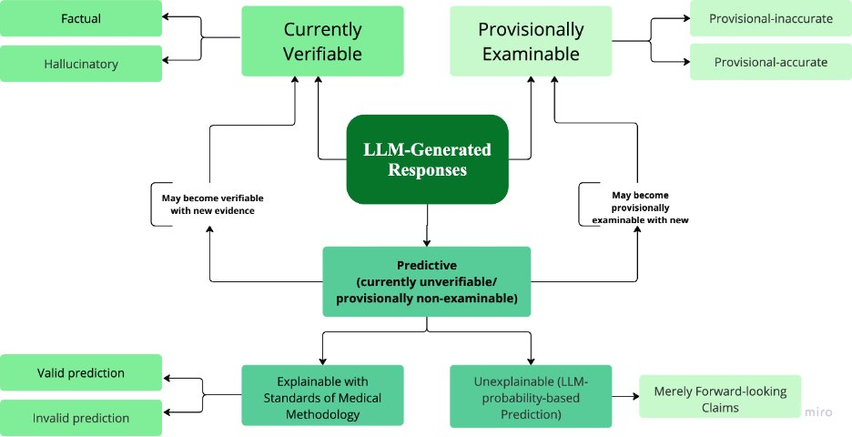
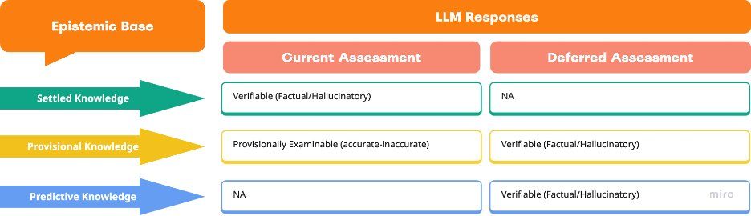
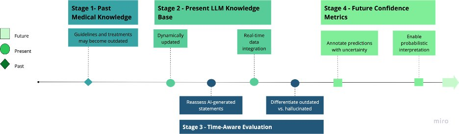

LLMs are increasingly used to answer medical questions, and their answers are usually judged as either factual or hallucinatory. That binary assumes every answer can be checked at the moment it is generated. Medical knowledge does not work that way: findings move from hypothesis to consensus, trials are still running, and prognoses can only be judged in hindsight. This paper critiques the binary and proposes a three-tier taxonomy built on two ideas: a veridicality gradient for knowledge that is still provisional, and temporal verifiability, whether a claim can be checked now or only later.
Highlights
A binary label treats evidence-consistent speculation the same as a fabrication, which penalizes legitimate scientific uncertainty.
Provisional answers are graded against current consensus (accurate vs. inaccurate) instead of being forced into true or false.
Predictive answers are split into content, judged later, and method, judged now if the reasoning is explainable.
Models should state the temporal validity of their answers and attach uncertainty labels, so clinicians do not read predictions as settled advice.
Framework

Fig. 1: classification of LLM-generated medical responses into currently verifiable, provisionally examinable and predictive responses, with their sub-labels.

Fig. 2: temporal verifiability and epistemic uncertainty. Each kind of knowledge is assessed now or deferred until new evidence arrives.

Fig. 3: a time-sensitive evaluation framework for LLMs in healthcare, from past medical knowledge to future confidence metrics.
Tier 1
Currently verifiable
Settled knowledge that can be checked now with high confidence. Each response is either factual or hallucinatory.
e.g. standard dosage of a commonly prescribed drug
Tier 2
Provisionally examinable
Claims resting on evolving evidence that later research may confirm or overturn. Graded as provisional-accurate or provisional-inaccurate against current consensus.
e.g. early links between gut microbiota and mental health
Tier 3
Predictive
Forward-looking, probabilistic statements. The content can only be judged once the outcome is known; the method can be judged now if it is explainable.
e.g. expected remission rate for a cancer therapy
Summary of the three tiers with medical examples from the paper.
How it works
Separate settled facts from provisional and predictive claims before scoring a medical answer.
Re-certify provisional claims as new evidence appears, and distinguish outdated answers from true hallucinations.
Use real-time knowledge retrieval to keep answers aligned with current consensus.
Track how provisional knowledge becomes established to recalibrate models over time.
Afroogh, S., Pouresmaeil, Y., & Jiao, J. (2025). Beyond the factual vs. hallucinatory dichotomy: A refined taxonomy for LLM medical response categorization. ICLR 2025 Workshop on Machine Learning for Genomics Explorations.